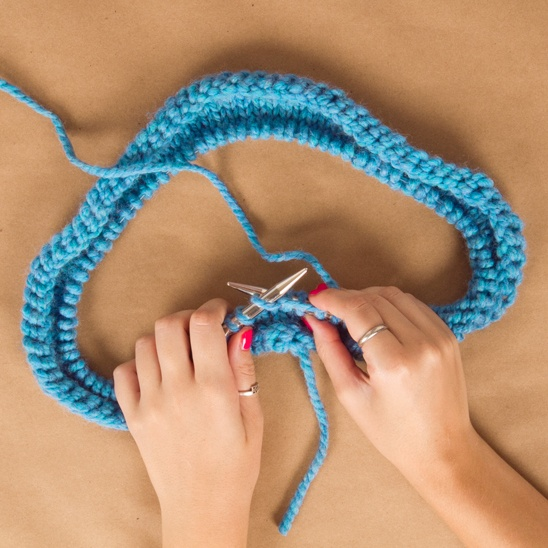
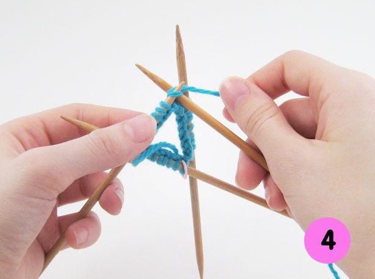

knitgit by tremlab
TORSO START

Bottoms up!
Let's start building the torso.
Using the needles and yarn that you chose to achieve your gauge, cast on {{ sweater.trs_stitches}} stitches.
Loop around from your last cast on, back to your first.
Make sure to use a marker to keep track of where your row starts.
Start working in the pattern stitch you used to achieve your gauge.
Continue working in your chosen stitch until work measures {{ sweater.raw_trs_length }} inches.
(Should be about {{ sweater.trs_rows }} rows, but do whatever feels right!)
Continue in your pattern stitch for {{ sweater.trs_half }} stitches.
We're halfway!! Cast off {{ sweater.trs_armhole }} stitches.
Continue the row in your pattern stitch for {{ sweater.trs_half }} stitches.
Again, cast off {{ sweater.trs_armhole }} stitches. Don't lose your marker! ;)
SLEEVE START
Set aside your (beautiful!) torso work, and lets get started on a sleeve.
Using the needles and yarn that you chose to achieve your gauge, cast on {{ sweater.slv_stitches }} stitches.

Loop around from your last cast on, back to your first.
Make sure to use a marker to keep track of where your row starts.
Start working in the pattern stitch you used to achieve your gauge.
Continue working in your chosen stitch until work measures {{ sweater.raw_slv_length}} inches.
(Should be about {{sweater.slv_rows }} rows, but do whatever feels right!)
Continue in your pattern stitch until you reach the last {{ sweater.trs_armhole }} stitches.
Cast off till the end of the row.
But... we do need 2 sleeves. so repeat it all again,
and make sure the lengths match each other exactly.
ASSEMBLE PIECES
First, let's assemble all of our pieces into one big sweater-loop.
You will need 3 markers, all the same color, plus 1 in a distinct color
to mark the absolute row beginning.
Knit in your pattern stitch across the front of your torso,
to where you cast off for the first armhole.
-> Insert the first of your 3 markers.
Now bring your first sleeve, and line up the opening for the armhole,
with the opening on the torso.
Continue to knit across from the torso directly onto the sleeve.
Knit all the way around the sleeve, and then...
-> Insert the second of your 3 markers.
Now continue to the back of your torso, knit all the way across
to where you cast off for the seocnd armhole.
-> Insert the last of your 3 markers.
Bring your second sleeve, line up the armohole openings again,
and knit around the armhole to the end.
We're back at the begining, now in one continuous loop!
-> Insert your 4th marker - unique color - to mark the row start.
NECK START
Now, for the remainder of the work,
you will be methodically decreasing stitches,
so the body will taper off to a neckline.
You will need to pay attention to stitch and row count going forward!
Starting at the beginning of the row (your unique marker), knit {{ sweater.trs_half }} stitches.
Knit 2 stitches together (decreasing by one.)
Continue knitting until {{ sweater.buffer_stitches() }} stitches before next marker.
Knit 2 together, knit {{ sweater.buffer_stitches() }}, pass the marker, knit {{ sweater.buffer_stitches() }}, and knit 2 together.
Continue all the way around the row, decreasing once before, and once after,
each marker, until you are back to the start of the row.
In plain English, you will be decreasing 8 stitches a row in this manner,
every {{ sweater.buffer_rows() }} rows, but the below chart will help you track exactly how many
stitches and rows you should have at every point.
RAGLAN DECREASE
{% for line in raglan %}
- {{ line }}
{% endfor %}
FINISH
Loosely cast off all stitches.
Sew closed the small armhole openings under each sleeve.
Weave any loose ends back into the fabric.
Block, iron, wash - whatever you did before to your swatch to achieve your gauge -
to make sure your sweater ends up the intended size.
YOU JUST MADE A SWEATER!!!!!!!!!!!
Do your happy dance!
Rock your sweater for the whole world to see,
and send pics to:
knitgit@gmail.com